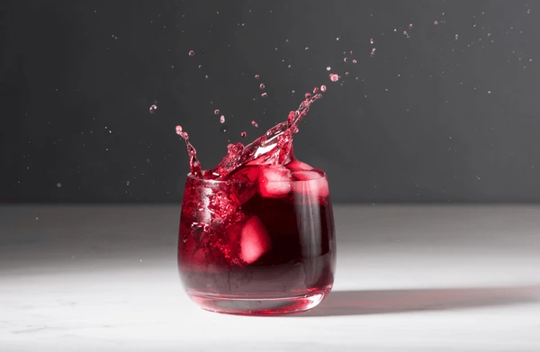
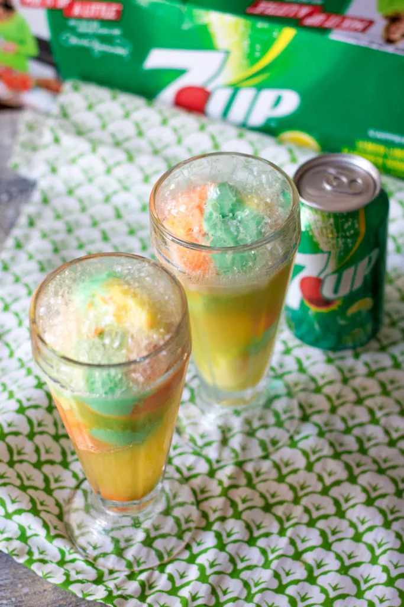
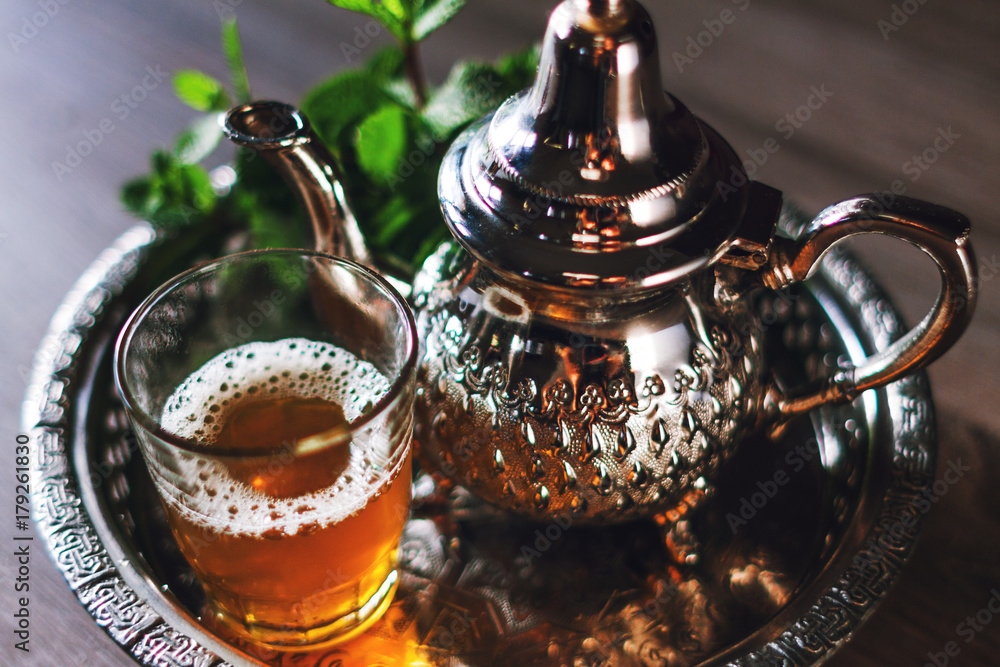

Ce lassi est une boisson indienne/pakistanaise traditionnelle à base de yaourt mélangée avec des mangues.
4,00 $
BIENFAITS
Le lassi est bon pour les os et renforce le système immunitaire. La mangue est excellente pour le système digestif.
HISTOIRE
Le lassi à la mangue a vu le jour dans le Nord-Ouest indien. Elle avait pour but d’accompagner les plats épicés et était utilisée dans la médecine
ayurvédique.

Bissap
Le bissap est une boisson africaine à base de fleurs d'hibiscus séchées, sucrée et souvent aromatisée.
3,75 $
BIENFAITS
Le bissap est apprécié mondialement pour ses propriétés médicinales, riches en antioxydants, vitamine C et fer, bénéfiques pour la santé cardiovasculaire, la digestion et le système immunitaire.
HISTOIRE
Le bissap, ou hibiscus sabdarififa, est une plante d’Afrique de l’Ouest et centrale, cultivée pour ses fleurs rouge vif utilisées dans diverses boissons et plats traditionnels. Populaire pour sa boisson acidulée et sucrée.

7up Sherbet
Le 7UP sherbet est un désert d’origine américaine, une mélange du soda 7UP avec de la crème glacée ou du sorbet.
2,50 $
BIENFAITS
Préparé avec des jus de fruits riches en vitamines et antioxydants, il offre également un petit coup d’énergie et une sensation de confort et de convivialité lors des partages festifs.
HISTOIRE
Le punch Sherbet 7Up trouve ses origines dans les années 1950 et 1960, lorsque les sodas et les punchs étaient très populaires lors des réunions et des fêtes. ayurvédique.

Thé marocain
Le thé marocain est une boisson chaude préparée en infusant du thé vert avec de la menthe fraîche et du sucre.
2,00 $
BIENFAITS
Ce thé est désaltérant. il a permis aux Touareg de survivre à des conditions extrêmes. il est apaisant.
HISTOIRE
Le thé marocain a vu le jour au 19e siècle pendant la guerre de Crimée. Les Anglais, ayant le monopole sur le commerce de thé en Europe, ouvrent leurs commerces à Tanger et à Essaouira. les Marocains décident donc de combiner le thé vert Gunpowder vendu par les Anglais à leur infusion menthe Nannah.